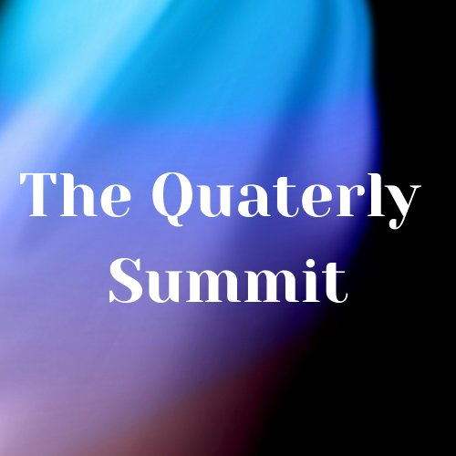

Lead Pastors & Church Founders
For pastors and ministry leaders who desire more than growth—those committed to building strong, grounded disciples, not just attendees.
Join the network ↗A global mandate to raise spiritually grounded, mentally robust, and technologically empowered ministers for the next move of God.
Who is this for?
Pastors, youth leaders and marketplace ministers committed to raising grounded disciples — not just attendees.
For pastors and ministry leaders who desire more than growth—those committed to building strong, grounded disciples, not just attendees.
Join the network ↗For leaders shaping the next generation in churches, campuses, and youth movements.
Join the network ↗For believers called to influence culture, industry, and creativity with the Kingdom of God.
Join the network ↗If you are hungry for a shift and continued relevance in your God-given assignment, there is a seat for you.
Start your application ↗“We are not just a network; we are a company of visionary and purposeful agents of change. This is a community that provides a safe place for fellowship, connection & encouragement.” — Pastor Dele Bamgboye
Join the network ↗Born out of a divine burden to mentor and father a new generation of leaders, NFMGN is an incubator for ministers who are hungry for a shift and continued relevance in the discharge of their God-given assignments.
The minister of the future must be as sound in the Spirit as they are savvy in leadership and technology.
Special attention is paid to balancing family life and ministry.
To equip every minister with the spiritual, mental and technological resources for fulfilment of divine assignments.
From a single burden in Nigeria to ministers across the nations — drag the globe to turn the world.
Direct mentorship sessions with the Convener.
Our monthly online course session.
A global gathering of ministers.
Access exclusive audio and video sessions from Pastor Dele Bamgboye.
Downloadable guides on church administration and ethics.
Bridging the gap between the pulpit and the digital age (Connected to HTECB).
Three rhythms that keep the network growing together — personal, monthly and global.

Fill out our comprehensive onboarding form.
A prayerful review by our leadership team.
Receive your welcome pack and join the global community.